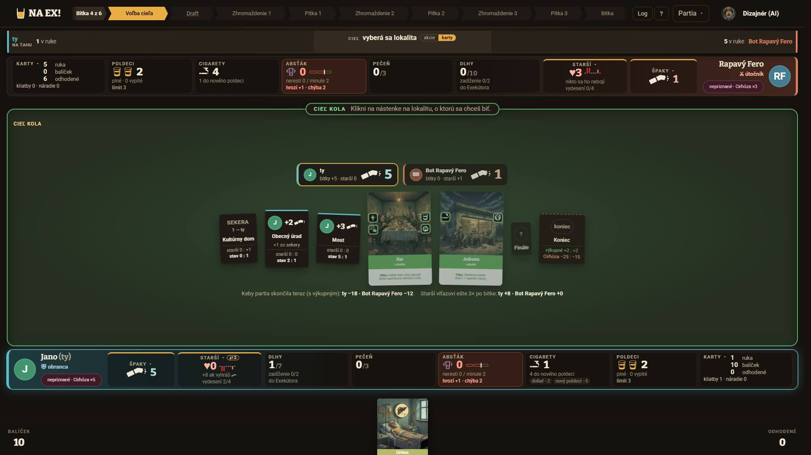
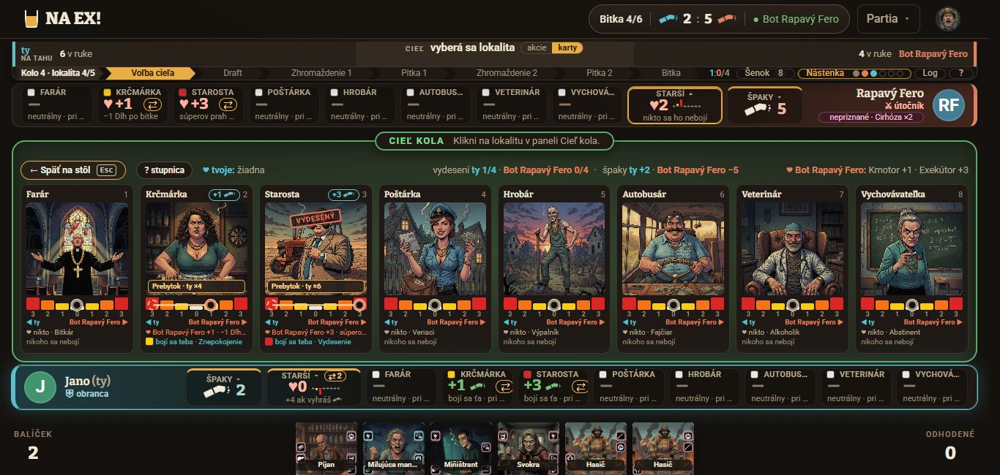
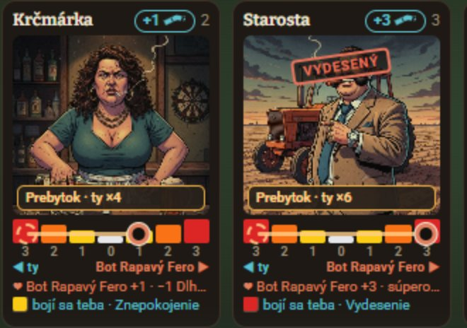
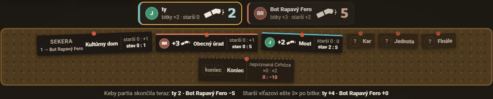
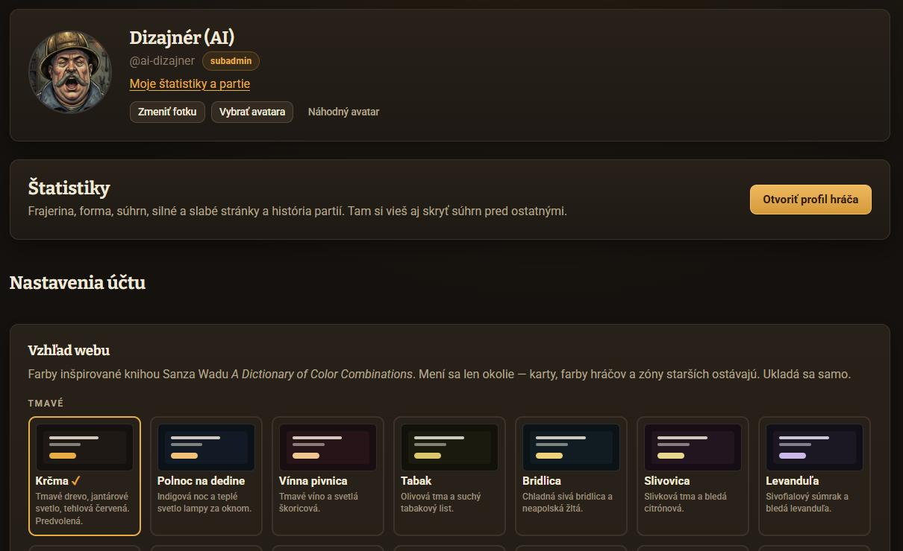

Farba hráča, veľká pečiatka VYDESENÝ a piktogram strachu
Verdikt. Farba hráča sa dá zaviesť lacno. Celá hra už kreslí „moje“ a „súperove“ cez dva tokeny --ja a --su (96× v hra.css, ďalej jbar, nástenka, rekapitulácia). Stačí ich na koreni partie nastaviť z voľby hráčov. Navrhujem 8 farieb v dvoch tónoch, pre tmavé a pre svetlé schémy. Text vo farbe hráča má vo všetkých 28 schémach kontrast aspoň 4,6 : 1, grafika na plsti aspoň 3,97 : 1. Pravidlo: tvoja farba je vždy tvoja. Ak má súper rovnakú farbu alebo farbu, ktorú by farboslepý nerozlíšil, uvidíš ho v náhradnej.
Pečiatka VYDESENÝ bude zhruba dvakrát väčšia (1,7× pri 1366, 2,4× pri 1920), s piktogramom a atramentom vo farbe toho, koho sa starší bojí. Dá sa nasadiť hneď, aj pred voľbou farieb. Zo sád piktogramov odporúčam B „Tvár staršieho“, ktorá už v sebe spája A a C: počet kvapiek z A sa rovná špakom, vlasy dupkom z C nesie vydesenie. Nová úloha piktogramu: farbou ukazuje, KOHO sa starší bojí, a tvarom AKO veľmi. Je to rub ♥, ktoré ukazuje, komu starší prihrieva.
Súčasný stav
Ukážka stola /hra/ukazka-stola?stop=kolo&i=4&lokalit=5&seed=8: kolo 4, Jano proti Botovi Rapavému Ferovi. Snímky línie a nástenky sú z dnešného rána (návrh piktogramov), kód sa odvtedy v týchto miestach nezmenil.





Kde sa farby hráčov používajú dnes (kód, 2026-10-27, origin/master f7260a9)
| Súbor | Výskyty | Čo |
|---|---|---|
schemy.css | 4 × 28 | --ja #5cc0cf, --ja-tmava, --su #e0805f, --su-tmava v každej schéme. Tmavé majú rovnaké hodnoty, svetlé stmavené (#006a77, #a3401d). |
hra/hra.css | 96 | Doska (.doska :276–310), čipy, strany bitky (:872), rozpis bodov, okno konca (:2406, 2433), toast priazne (:2836), prevaha na kraji (:3208), línia starších (:5117–5790), dlaždica Starší (:6299), počítadlo (:7079–7192), rekapitulácia (:7360–7870), patronát (:8479), tieň šenku (:8501). |
hra/jbar.css | 8 | Strany jednotného baru, meno, sloty kariet (:42–70, 151–157). |
hra/spaky.css | 8 | Veľké číslo špakov (:38), lístok víťaza (:103), popolník (:254), hlavička rekapitulácie (:467). |
stranky/profil/profil.css | 6 | Graf priebehu partie v detaile (:480–507). |
stranky/novinky.css, stranky/vyvoj.css | 3 | Tu tokeny neznamenajú hráčov (štítok noviniek, graf 2 na 2). Preto sa farba hráča nesmie meniť v :root, len na koreni partie. |
komponenty.tsx:13–21 | 1 | Avatar s iniciálami: hsl(hash(meno) 38% 42%). S farbou hráča nesúvisí. |
hra/LiniaStarsich.tsx:421, hra.css:5406 | 1 | Pečiatka .ls-peciatka.moja/.superova: triedy existujú, štýl nemajú, takže je vždy --cervena-text. |
Audit
Kontrasty sú prepočítané podľa WCAG 2.2 vo všetkých 28 schémach (schemy.css, 14 tmavých a 14 svetlých). Plsť je počítaná rovnako ako v hra.css:1084–1104 (color-mix v OKLab). Farbosleposť simulujem podľa Machada (2009) so závažnosťou 1,0. Vzdialenosť farieb meriam ako ΔE v OKLab a za „podobné“ považujem pár pod 0,08.
| # | Problém | Závažnosť | Dôkaz |
|---|---|---|---|
| F1 | Pečiatka VYDESENÝ je malá a nehovorí, komu patrí. Má 9,6 px (0,6 rem) a je vždy červená. Vydesenie je pritom výherná podmienka (4 vydesení) a zdroj až 3 špakov po bitke. Sedí na tvári staršieho (top 10 %). | vysoká | vyrez-linia-1366; hra.css:5406–5420, LiniaStarsich.tsx:421 |
| F2 | Avatar s iniciálami má náhodnú farbu. Odtieň sa ráta z mena, takže „J“ je zelený vedľa tyrkysovej dosky a „RF“ modrý vedľa tehlovej. Na nástenke stoja dve rôzne farby toho istého hráča tesne vedľa seba. | vysoká | stav-1920-kolo, vyrez-nastenka-1920; komponenty.tsx:13–21 |
| F3 | Farby sú relatívne, nie osobné. Ty si vždy tyrkysový a súper vždy tehlový. Hráč si nemôže zvoliť svoju farbu a súper nemá vlastnú identitu, takže Rapavý Fero aj Teta Gizka sú rovnako tehloví. | stredná | schemy.css:37–40 (×28) |
| F4 | Paletu obmedzujú herné významy farieb. Zelená plsť znamená „hráš ty“, jantár hlavné tlačidlo, aktívnu fázu a koniec. Žltá, oranžová a červená sú zóny strachu, červená je chyba a Absťák, biela neutrálny starší. Farba hráča nesmie žiadnu z nich napodobniť. | stredná | hra.css:1082–1104, geometria.ts:120 |
| F5 | Na jednom 16 px znaku sú dve farby. Pri strachu nesie štvorček farbu zóny a text farbu hráča. Keď príde piktogram, musí byť jasné, čo nesie farba (KOHO) a čo tvar (AKO veľmi). | stredná | stav-1366-linia; LiniaStarsich.tsx:458 |
| F6 | Rub a líc markera nevidno. „♥ Fero +1“ a „bojí sa teba“ sú dva riadky textu pod stupnicou. Z rozloženia nevyplýva, že jeden marker dáva jednému hráčovi ♥ a druhému strach. | stredná | stav-1366-linia; LiniaStarsich.tsx:446–470 |
| F7 | Tehlová súpera splýva s oranžovou zónou. #e0805f a #f97316 majú ΔE 0,05 a kontrast 1,01 : 1. Súperova pečiatka nad oranžovou stupnicou sa preto musí opierať o tvar (rám, piktogram), nie o farbu. | nízka | schemy.css:39, geometria.ts:120 |
| F8 | --ja a --su slúžia aj mimo hry. Novinky a Vývoj ich používajú ako všeobecné farby. Globálne prepísanie by im zmenilo význam, takže override patrí na .hra. | nízka | novinky.css:267, vyvoj.css:685 |
1 · Odporúčanie sady piktogramov strachu
Michal chce piktogramy zatiaľ len do roadmapy. Odporúčanie preto stojí na štyroch kritériách zo zadania a na jednom novom, ktoré pribudlo s farbou hráča. Piktogram bude vo farbe hráča, a tak stupeň nesmie niesť farba. V mojej doske budú ♥ aj strach rovnakej farby (mojej), rozlišuje ich teda len tvar.
| Kritérium (1–5) | A · Kvapky | B · Tvár | C · Vlasy | D · Kolená | Poznámka |
|---|---|---|---|---|---|
| Čitateľnosť pri 16 px | 5 | 4 | 3 | 4 | A je najjednoduchšia. Pri B nesie stupeň pri 16 px hlavne výraz a vlasy, kvapky sú už len bodky. |
| Farbosleposť (stupeň bez farby) | 5 | 5 | 3 | 4 | A má počet, B výraz aj počet, C len výšku klobúka (2 px), D chvenie a mláčku. |
| Odlíšenie od ♥ v rovnakej farbe | 2 | 5 | 5 | 5 | Kvapka aj ♥ sú pri 16 px oblé škvrny s hrotom, líši sa len smer hrotu. V jednej farbe vedľa seba sa pletú. Tvár je okrúhla a hrot nemá. |
| Humor s mierou | 2 | 4 | 5 | 3 | D bez mláčky stráca vydesenie, s mláčkou je za hranou pre ikonu, ktorú hráč vidí 50× za partiu. |
| Rub a líc ♥ (nové) | 2 | 5 | 4 | 3 | ♥ je náklonnosť staršieho a tvár jeho strach. Obe sú „starší“ a líšia sa citom, čo je presne vzťah rubu a lícu. Kvapky a kolená sú len príznak. |
| Spolu | 16 | 23 | 20 | 19 |
B je vlastne kombinácia. Z A berie počet kvapiek (1, 2, 3 = Znepokojenie, Strach, Vydesenie = špaky po výhre), z C vlasy dupkom pri vydesení. Nič ďalšie nemiešať: jeden význam, jeden znak.
Ako piktogram ukáže rub a líc. Marker staršieho je minca. Na polovici hráča, ku ktorému leží, ukazuje líc ♥ vo farbe toho hráča. Na druhej polovici ukazuje rub, tvár vo farbe hráča, ktorého sa starší bojí. Pod stupnicou preto nebudú dva riadky textu, ale jeden riadok so stranami: na mojom konci to, čo z neho mám ja, na súperovom konci to, čo má súper. Rovnaké rozloženie sa hodí do legendy „? stupnica“ a do výučby.
Farby v ukážke menia voľby v ovládacom páse nižšie (sekcia 2). Stupeň nesie len tvar, takže pri „sivo“ musí byť rovnako čitateľný.
Čo nesie farba a čo tvar
- Farba hráča = KOHO: ♥ vo farbe toho, komu starší prihrieva, tvár vo farbe toho, koho sa bojí, pečiatka vo farbe toho, koho sa bojí.
- Tvar a počet = AKO veľmi: 1, 2, 3 kvapky a výraz. Pri 16 px nikdy nie farba zóny.
- Farba zóny ostáva len na poliach stupnice a v legende. Tam je stupeň plocha, nie znak.
- Tlač a pravidlá (bodovacie ikony, scorecardy, achievement Strašiak): B jednofarebne, biela na čiernej. Pazúry v
seed/bodovanie/ikony/{znepokojenie,strach,vydesenie}.svgnahradiť hneď, ako Michal potvrdí sadu.
2 · Farba hráča
Paleta: 8 farieb, každá v dvoch tónoch
Svetlý tón platí v 14 tmavých schémach, tmavý v 14 svetlých, rovnako ako dnešné --ja a --su. Sifón a Paprika sú presne dnešné farby, takže hráč bez voľby uvidí stôl ako doteraz. Názvy sú krčmové a dedinské, pri každej je v nápovede aj obyčajný názov farby (pre čítačky a tých, ktorým „Nevädza“ nič nehovorí).
Čísla pod kartou sú najhoršie prípady cez všetkých 28 schém. „Text“ je kontrast na --pozadie, --plocha a --plocha-2 (treba 4,5 : 1). „Plsť“ je kontrast grafiky na plsti v troch stavoch: tvoj ťah, čakanie a koniec (treba 3 : 1). Najhoršia tmavá schéma je vždy Terakota, najhoršia svetlá Šalvia.
Čo do palety nedávam a prečo
--akcent).--zelena-ziariva majú ΔE 0,10 a 0,11.Pravidlo náhradnej farby
- Tvoja farba je vždy tvoja. Na tvojej obrazovke máš vždy farbu, ktorú si si zvolil. Súper u seba vidí svoju. Farby sa počítajú z pohľadu toho, kto sa pozerá, tak ako dnes
--jaa--su. - Súperovu farbu prevezmeš, ak je dosť iná. Dosť iná znamená, že pár nie je v tabuľke „podobné“. Tá vznikla z ΔEOK ≥ 0,08 pri bežnom videní, deuteranopii aj protanopii, v oboch tónoch. Netreba vedieť, kto je farboslepý: pravidlo je opatrné za oboch.
- Inak dostane súper náhradu: prvú farbu z poradia Paprika, Sifón, Chmeľ, Nevädza, Malina, Fialka, Mäta, Slivka, ktorá nie je podobná tvojej. Pri tvojej voľbe Sifón alebo predvolenej je to vždy Paprika, teda dnešný stav.
- Kto nevybral („Automaticky“), je pre seba Sifón. Súperovi sa ukáže ako jeho náhrada, teda Paprika.
- Boti a Melichar majú pevnú farbu (návrh): Štamgast Chmeľ (pivo), Rapavý Fero Paprika, Teta Gizka Malina (malinovka), Majster Melichar Slivka (slivovica). Pre nich platí to isté pravidlo náhrady.
- Náhrada sa nehlási. Stačí
titlena súperovom mene („Fero si vybral Malinu, u teba je Paprika, lebo Malina sa podobá na tvoju farbu“). Ako to vysvetliť hráčovi, rieši UX návrh.
V bunke je najmenšie ΔEOK cez bežné videnie, deuteranopiu a protanopiu, v tmavom aj svetlom tóne. Červená bunka znamená „podobné“: z 28 párov je to 8, väčšinou kvôli svetlým schémam, kde je pásmo jasu pre text úzke (L 0,36–0,52). Posledný stĺpec ukazuje, akú farbu dostane súper, keď je jeho voľba podobná tvojej.
Kde sa farba hráča použije
Platí jednoduché pravidlo: farba hráča patrí tomu, čo patrí hráčovi (jeho doska, jeho body, jeho strana, jeho vplyv na staršieho). Nepatrí tomu, čo opisuje stav hry (čí je ťah, zóna, fáza, chyba) ani kartám.
| Miesto | Dnes | Návrh | Prečo a ako | Kód |
|---|---|---|---|---|
| Pečiatka VYDESENÝ | vždy červená | áno | Atrament vo farbe toho, koho sa starší bojí (Michal). Pozri sekciu 3. | LiniaStarsich.tsx:421, hra.css:5406 |
| Piktogram strachu a ♥ v línii (strany stupnice) | text + štvorček zóny | áno | ♥ vo farbe zvýhodneného, tvár vo farbe obávaného, každé na konci stupnice svojho hráča. | LiniaStarsich.tsx:446–470 |
| Prstenec markera na stupnici | áno | áno | Farba zvýhodneného. Neutrálny marker má prstenec farby textu. | hra.css:5492–5500 |
| Polia stupnice | farby zón | nie | Stupeň nesie zóna. Farba hráča by ho prebila. | geometria.ts:120 |
| Čip „+n špakov“ v hlavičke karty staršieho | áno | áno | Farba toho, kto špaky po výhre dostane, teda obávaného. | hra.css:5364 |
| Doska hráča | áno | áno | Hlavný nosič identity: pruh 5 px a prechod pozadia (--ja-tmava sa odvodí cez color-mix). | hra.css:276–310 |
| Dlaždica a bar Starší (♥, rad tvárí) | stĺpčeky, zelené „+1“ | áno | V mojej doske je všetko moje: ♥ aj tváre v mojej farbe, rozlišuje ich tvar. „+n“ už nie zelenou. | Starsi.tsx:47–120 |
| Avatar s iniciálami | farba z mena | áno | V partii výplň farbou hráča a iniciály farbou pozadia (kontrast aspoň 5,5 : 1). Mimo partie sa to neoplatí. | komponenty.tsx:13–21 |
| Avatar s fotkou | bez rámika | áno | V partii prstenec 2 px vo farbe hráča s medzerou 2 px. | komponenty.tsx, hra.css |
| Avatar mimo partie (rebríček, Dielňa, Vývoj) | — | nie | Mimo stola farba nič neznamená a v rebríčku by z 8 farieb boli konfety. Výnimkou je hlavička profilu, ktorá voľbu ukazuje. | — |
| Jednotný bar (strana, meno, „NA ŤAHU“, sloty kariet) | áno | áno | Pilulka „NA ŤAHU“ vyplnená farbou toho, kto ťahá. | jbar.css:42–70, 151 |
| Kto je na ťahu: farba plste | zelená / sivá | nie | Zelená plsť „hráš ty“ je najsilnejší signál stola a musí znamenať to isté v každej partii. Plsť v súperovej Maline by bola krik. | hra.css:1082–1104 |
| Popolníky na nástenke | pruh 4 px | áno | Pruh a avatar s iniciálami. Číslo ostáva zmiešané 45 % s textom. | spaky.css:38, 254 |
| Lístky lokalít (víťaz) | pruh 3 px | áno | Pruh a iniciály víťaza v jeho farbe. Nerozhodnuté lístky bez farby. | spaky.css:103 |
| Hlavička webu počas partie („2 : 5“ s ohorkami) | áno | áno | Ohorky vo farbách hráčov, čísla vo farbe textu. | HlavaStranky.tsx |
| Rekapitulácia bitky (stĺpce, pruhy, žetóny) | áno | áno | Bez zmeny kódu, stačia tokeny. | hra.css:7360–7870, Rekapitulacia.tsx |
| Strany bitky, toast priazne, prevaha na kraji, počítadlo, tieň šenku | áno | áno | Bez zmeny kódu, stačia tokeny. | hra.css:872, 2836, 3208, 7079, 8501 |
| Hrana lokality (prevaha, skóre hrany) | text | áno | Text prevahy vo farbe vedúceho, ako dnes. Líce karty lokality sa nefarbí. | HernaPlocha.tsx:2578 |
| Log | bez farby | áno | Len meno hráča v riadku (tučne, jeho farbou). Celé riadky nefarbiť, log je na čítanie. | log v HernaPlocha.tsx |
| Karty v línii a v ruke | — | nie | Líca majú farby typov kariet, medzi nimi aj tyrkysovú a ružovú. Zafarbený rám by sa s nimi plietol. | karta/ |
| Kurzor | — | nie | Partia nemá zdieľaný kurzor a vlastný farebný kurzor nič nevysvetlí. | — |
| Okno konca partie | pruh súpera pri prehre | áno | Skóre vo farbách hráčov. Rám výhry ostáva jantárový, pri prehre pruh víťaza. | hra.css:2406, 2433 |
| Graf priebehu partie v profile | áno | áno | Farby, aké mali hráči v danej partii. Ak sa neukladajú, tak dnešné tokeny (ty a súper). | profil.css:480–507 |
| Grafy Vývoj, štítky Noviniek | --ja/--su | nie | Nie sú to hráči. Override robiť len na koreni partie. | vyvoj.css:685, novinky.css:267 |
| Pult Melichara | --ja | nie | Ovládací prvok, nie hráč. Pevný tyrkys (--f-sifon), aby pult nemenil farbu podľa hráča. | soundboard.css |
Mockup stola s dvoma farbami
Krok starších v kole 4, pohľad Jana (dole). Starosta je vydesený z Jana a Hrobár z Fera. Krčmárka sa Jana bojí (Znepokojenie), Poštárka Fera (Strach). Farby, schému a videnie meníš v páse hore. Mockup je v skutočnej šírke a zmenšený na šírku stránky, „100 %“ ho ukáže v plnej veľkosti s posúvaním.
Nástenka a rekapitulácia
Výber farby v profile
Výber dávam do hlavičky profilu pod avatar a meno, pretože farba je identita ako meno a avatar. Do „Vzhľadu webu“ ju nedávam. Ukladá sa sama, ako schéma. Vpravo je náhľad, ako ťa uvidí súper. Na mobile sú voľby v dvoch stĺpcoch po 48 px a náhľad je pod nimi.
Text v ukážke („Ak má súper podobnú farbu…“) je len návrh. Presné znenie a kedy hráča na náhradu upozorniť rieši UX návrh.
3 · Pečiatka VYDESENÝ: veľká, vo farbe hráča
- Veľkosť: písmo sa mení s portrétom (
container-type: inline-size,clamp(11px, 10,2cqi, 26px)). Pri 1366 má 16 px namiesto 9,6 px (1,7×), pri 1920 asi 23 px (2,4×). Šírka je 80–85 % portrétu. - Atrament má farbu hráča, ktorého sa starší bojí (
--jaalebo--su). Pod slovom je riadok „z teba“ alebo „z Fera“, takže to platí aj bez farby. Vľavo je piktogram B3 (vydesená tvár), rovnaký ako v doske. - Krčmová pečiatka: dvojitý rám (rám 0,13 em, medzera, linka 0,06 em), Bitter 900, otočenie −11°, zrnitý atrament cez masku
feTurbulence(inline SVG v CSS, bez súboru). - Poloha: stred v 60 % výšky portrétu, teda na hrudi, nie na tvári. Lístok „Prebytok“ (dolných 20 %) a riadok patróna ostávajú voľné.
- Pohyb: keď starší zostane vydesený, pečiatka „buchne“ za 240 ms (1,9 → 0,95 → 1). Pri
prefers-reduced-motionsa len objaví. - Svetlé schémy: podklad 80 %
--pozadie, atrament v tmavom tóne. Kontrast je rovnaký ako pri texte (aspoň 4,6 : 1).
Pečiatku sa oplatí nasadiť samostatne a hneď, ešte pred voľbou farby. S dnešnými tokenmi bude tyrkysová (bojí sa teba) alebo tehlová (bojí sa súpera). Keď príde voľba farby, prevezme ju bez ďalšej zmeny.
Implementácia
Farba hráča stredná · ≈ 1 deň
lib/farbyHracov.ts(nové):PALETA,PODOBNE,PORADIE_NAHRADY,farbyStola(moja, superova)→{ ja, su, nahradena }. Je to čistá funkcia, dá sa otestovať.schemy.css: tokeny--f-sifon … --f-mata, raz v spoločnom:root(svetlé tóny pre tmavé schémy) a raz v zozname svetlých schém (tmavé tóny). Dnešné--ja/--suostanú ako predvolené.- Koreň partie (
HernaPlocha.tsx):style={{"--ja": "var(--f-nevadza)", "--su": "var(--f-malina)"}}, k tomu--ja-tmavaa--su-tmavacezcolor-mix(in oklab, var(--ja) 22%, var(--pozadie)). Ostatné CSS sa nemení. - Server: stĺpec
farba TEXTpri používateľovi (akoschema,db.ts:347), API profilu, a v stave partie verejnéfarby: [id | null, id | null]. Je to verejný údaj,viewForho smie poslať obom. Boti dostanú pevnú farbu podľa povahy. Avatar: voliteľný propfarba. Bez neho ostane hash mena (mimo partie).Ucet.tsx: radiogroup v hlavičke profilu (9 volieb, 48 px,aria-checked, šípky).
Pečiatka malá · ≈ 1 h
.ls-portret { container-type: inline-size; }
.ls-peciatka {
top: 60%; translate: -50% -50%; rotate: -11deg;
font: 900 clamp(11px, 10.2cqi, 26px)/1 var(--pismo-nadpis);
color: var(--ink);
border: 0.13em solid currentColor;
box-shadow: inset 0 0 0 0.09em var(--podklad),
inset 0 0 0 0.15em currentColor;
mask: var(--zrno) 0 0 / 7em 7em;
}
.ls-peciatka.moja { --ink: var(--ja); }
.ls-peciatka.superova { --ink: var(--su); }
V JSX pribudne piktogram a riadok „z teba / z {meno}“ (LiniaStarsich.tsx:421). Triedy .moja/.superova už existujú.
Piktogram B stredná · roadmapa
hra/IkonaStrachu.tsx podľa IkonaSpaku.tsx, plná silueta s fill-rule="evenodd" namiesto masiek. Miesta a riadky sú v predchádzajúcom návrhu. Nové je len to, že farba je currentColor hráča, nie zóny.
Odporúčané poradie
- Pečiatka VYDESENÝ (≈ 1 h, rýchla výhra). Funguje s dnešnými tokenmi. Rieši F1 a F7.
- Farba hráča: tokeny, server, profil, avatar v partii (≈ 1 deň). Rieši F2, F3, F4 a F8. Pečiatka ju prevezme sama.
- Piktogram B (roadmapa): línia a strany stupnice, dosky, nástenka, rekapitulácia. Potom bodovacie ikony a pravidlá. Rieši F5 a F6.
Bez rozhodnutia Michala sa dá spraviť len krok 1. Pri kroku 2 treba potvrdiť paletu a pravidlo, pri kroku 3 sadu.
Otázky na Michala
- Paleta: stačí 8 farieb (Sifón, Nevädza, Fialka, Slivka, Malina, Paprika, Chmeľ, Mäta)? Žltú, jantárovú, červenú a bielu som vynechal, lebo majú v hre význam. Chceš aj tak 9. a 10. farbu, napríklad Krieda a Med, za cenu, že budú pliesť stav hry?
- Pravidlo: súhlasíš, že „tvoja farba je vždy tvoja“, aj keď to znamená, že dvaja hráči môžu ten istý stôl vidieť v iných farbách? Druhá možnosť je pevné poradie (napr. útočník prvej bitky má prednosť), potom však jeden hráč niekedy nevidí sám seba vo svojej farbe.
- Boti: Štamgast Chmeľ, Rapavý Fero Paprika, Teta Gizka Malina, Melichar Slivka?
- Plsť ostáva zelená „hráš ty“ a nepreberá farbu hráča. Súhlasíš?
- Piktogram: B „Tvár staršieho“ (spojenie A + C)? A bodovacie ikony (pazúry) nahradiť hneď po potvrdení sady?
- Pečiatka: môže ísť hneď, s dnešnými farbami, ešte pred voľbou farby hráča?